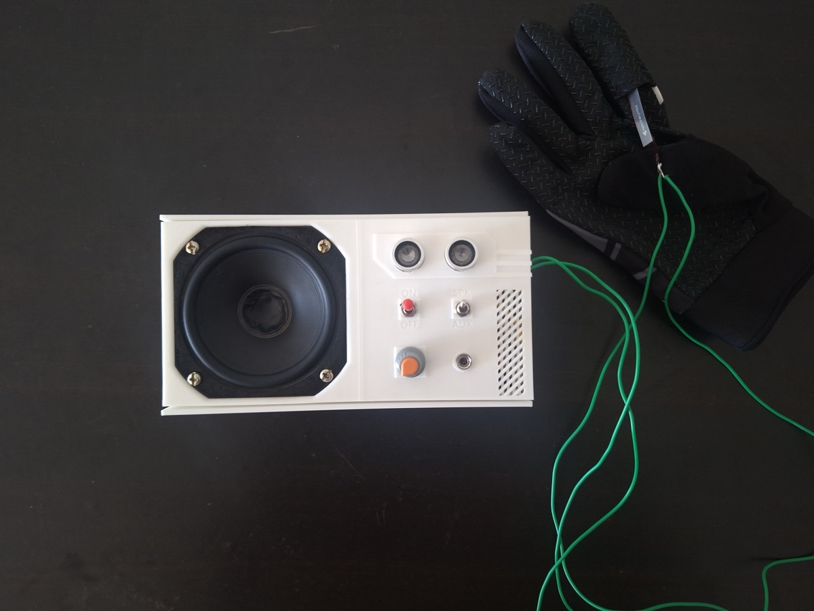

This synthesizer is a standalone device which acts as a sound-operator, manipulator and sound reproduction with a specialised body interface. It runs the MOZZI sound synthesis library on the Arduino Uno to generate a triangle wave. An ultrasonic sensor controls pitch whereas a flex sensor introduces pitch modulation through chance operation when bent. This creates a system of controlled randomness, where the performer influences the range of random pitch.
The audio can be outputted through a built-in speaker and a headphones jack. The user can switch on the instrument and customize the existing Arduino code according to their specific needs using the USB type B port. The circuit was put in a 3D-printed case designed for the instrument.
Supervision: Yashas Shetty · Circuit, 3D-printing and programming: Renee Dua & Anant Rohmetra